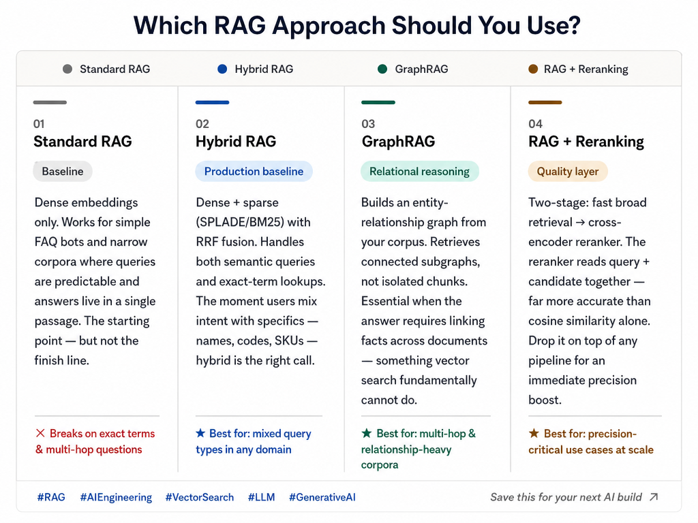
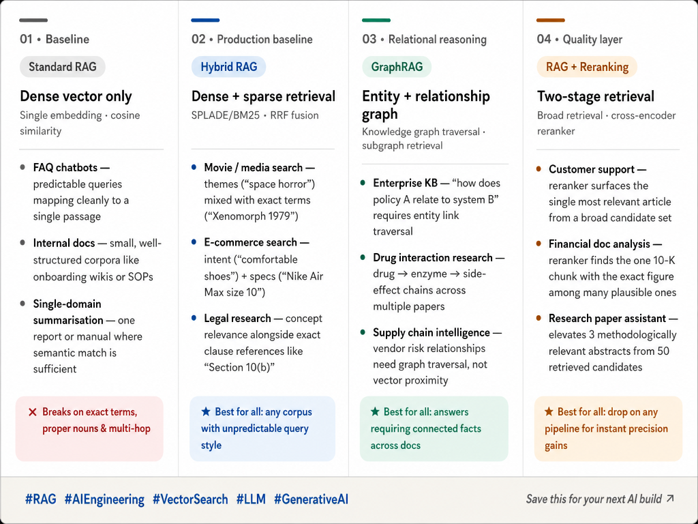

Retrieval-Augmented Generation (RAG) has become foundational to building practical AI systems that ground responses in external knowledge. But RAG is not monolithic—different approaches serve different use cases. This guide explores the landscape of RAG techniques and how to choose the right approach for your specific problem.
Detailed RAG Type Classifications
RAG systems can be classified by their architectural patterns, retrieval strategies, and reasoning capabilities. The taxonomy below shows how different RAG variations fit into broader families of approaches—from simple retrieval to sophisticated multi-hop reasoning over complex knowledge graphs.

Understanding RAG Types and Their Use Cases
The image below provides a comprehensive overview of different RAG types and their primary use cases. Each approach trades off complexity, latency, cost, and relevance. Understanding these tradeoffs is essential when designing systems that must retrieve and reason over large knowledge bases.

Choosing the Right RAG Approach
Selecting a RAG strategy requires answering several key questions:
- What is the latency requirement? Simple retrieval is fast; complex reasoning is slower.
- How structured is your knowledge? Graph-based RAG excels with relational data; embedding-based RAG handles unstructured text.
- What reasoning depth is needed? Single-hop retrieval for simple lookup; multi-hop for complex inference.
- What is your operational budget? Indexing cost, query cost, and infrastructure complexity vary significantly.
These considerations, combined with the taxonomies shown above, should guide your architecture decisions from prototype through production deployment.